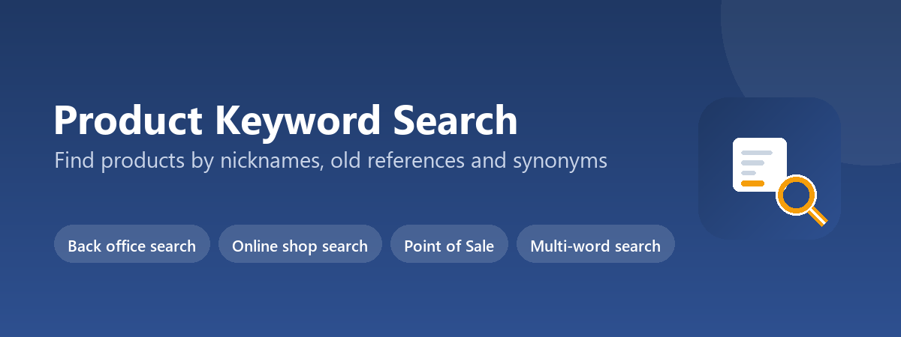

Add your own search keywords to products and find them by those words in the back office, the online shop and the Point of Sale.
People rarely search for a product by the name on its form. They type a nickname, an old reference or the name a competitor uses. Put those words on the product once and it turns up wherever a product is searched.
🏷 Keywords on productsAdd keywords on a product for all its variants, plus extra ones on a single variant when needed. |
🔍 Back office searchProduct drop-downs on orders, invoices and transfers find products by keyword, and so do the product lists. |
🛒 Online shop searchThe shop search and its suggestions as you type look in the keywords too. |
💳 Point of SaleCashiers find products by keyword straight from the product search box. |
💬 Several wordsType several words and only products matching every one of them are shown. |
📋 Keyword listOne list to rename and colour keywords and see which products use each one, plus a filter for products that have none yet. |
Odoo 18.0 • Community & Enterprise • depends on eCommerce and Point of Sale • Licence LGPL-3
Odoo implementation and development. thecodelegion.com